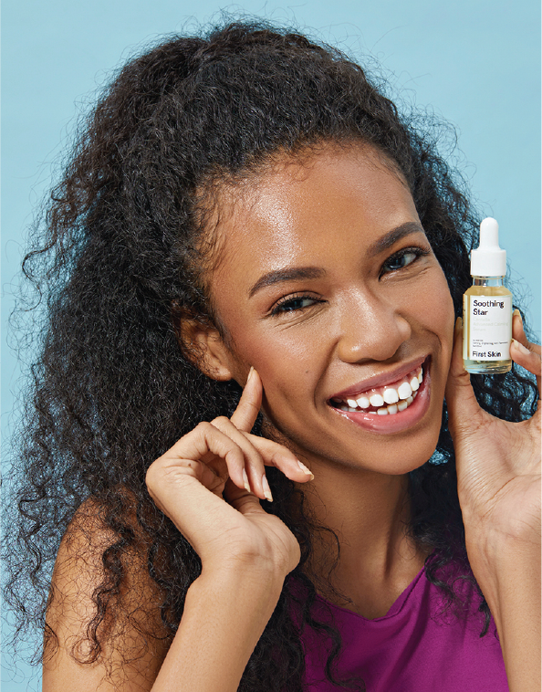
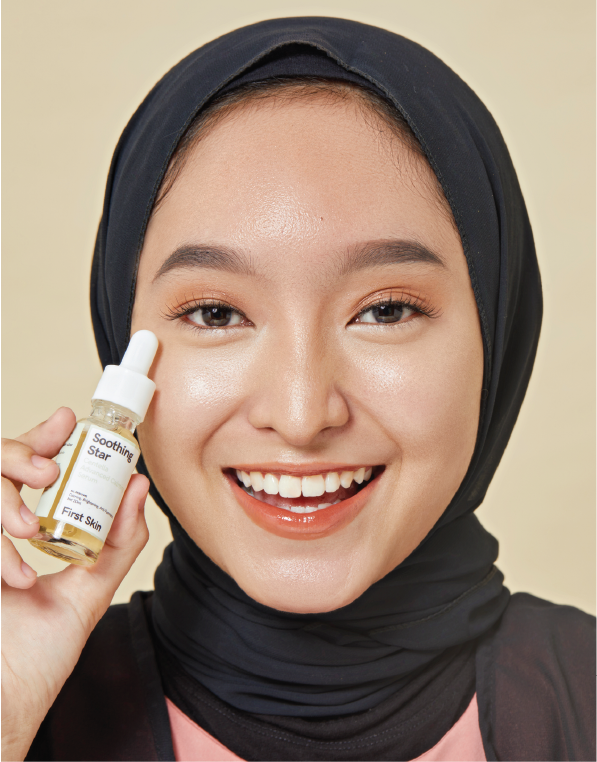

FIRST SKIN
First Skin is a skincare brand based in Indonesia.
The brand stands for clean beauty, emphasizing a
positive impact for the environment and healthy skin.
We help them in creating their branding,
brand direction, packaging and social media.